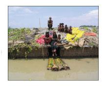
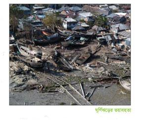
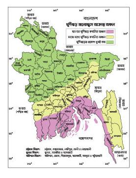

অধ্যায় ১২
দুর্যোগ মোকাবেলা
১ বন্যা

বাংলাদেশের নানা ধরনের দুর্যোগ ঘটে তার মধ্যে দুটি হলো বন্যা ও ঘুর্ণঝড়। প্রাকৃতিক কারণ ছাড়াও মানবসৃষ্ট পরিবেশ দুষণের প্রভাবে অনেক সময় দুর্যোগ ঘটে থাকে।
বন্যার প্রভাব
১৯৮৭ সাল থেকে বাংলদেশে ৭টি ভয়াবহ বন্যা হয়েছে। আষাঢ় থেকে ভাদ্র মাসের মধ্যে মূলত বন্যার প্রকোপ বেশি থাকে। এই বন্যার ফলে মানুষের জীবন, ফসল, বাড়ি-ঘর এবং রাস্তা-ঘাটের অনেক ক্ষতি হয়। বন্যার কারণে বিশুদ্ধ পানির অভাবে মানুষের মাঝে নানা রোগ ছড়ায়। তবে বন্যা হলে মাটিতে পলি জমা হয় যা মাটির উর্বরতা বাড়তে সহায়তা করে।
বন্যার কারণ
বাংলাদেশের ভৌগোলিক অবস্থান এবং প্রাকৃতিক কারণে বন্যা হয়। অতিরিক্ত বৃষ্টিপাত বন্যার একটি কারণ। এছাড়াও পলি জমে নদীর তলদেশ ভরা হয়ে যাওয়ার কারণে নদীগুলোর ধারন ক্ষমতা হ্রাস পাচ্ছে। ফলে বর্ষা মৌসুমে পানি প্রবাহ বৃদ্ধি পেলে বন্যা দেখা দেয়।
বন্যা মোকাবেলা
বন্যা সবসময় নিয়ন্ত্রণ করা যায় না। আমরা যাতে বন্যা মোকাবেলা করতে সে জন্য কিছু প্রস্তুতি নেওয়া যায়। যেমন :
-
নিয়মিত রেডিও, টেলিভিশন ও সংবাদপত্রে আবহাওয়া সম্পর্কে খবর শুনব।
-
বাড়ির কাছে খাল-নদীতে চিহ্ন দিয়ে বাঁশ-লাঠি পুঁতে রাখব যাতে বুঝতে পারি পানি কতটুকু বাড়ল।
-
বন্যার আগে শুকনো খাবার, বিশুদ্ধ পানি, ঔষধ জমিয়ে রাখব।
-
পড়ার বই-খাতা ও ঘরের গুরুত্বপূর্ণ সামগ্রী প্লাস্টিক ব্যাগে ভরে গুছিয়ে রাখব ।
-
মনে সাহস রাখব এবং ধৈর্যের সাথে দুর্যোগ মোকাবেলা করব।
ক। এসো বলি
শিক্ষকের সহায়তায় শ্রেণিতে আলোচনা কর :
-
বন্যা নিয়ে তোমার কী ধরনের অভিজ্ঞতা আছে?
-
তোমার এলাকায় সংঘটিত কোনো বন্যা সম্পর্কে তোমার অভিজ্ঞতা বল।
-
বন্যা মোকাবেলায় কী ধরনের প্রস্তুতি নেবে?
-
বন্যা কীভাবে প্রতিরোধ করা সম্ভব?
খ। এসো লিখি
বন্যা মোকাবেলায় প্রস্তুতিস্বরুপ তুমি তোমার পরিবারের জন্য প্রধান যে ৪টি কাজ করবে তার একটি তালিকা তৈরি কর। কাজটি জোড়ায় কর।
গ। আরও কিছু করি
বন্যায় কী ধরনের প্রস্তুতি নিতে হয় সে সম্পর্কে বন্ধুদের মধ্যে সচেতনতা তৈরির জন্য একটি পোস্টার তৈরি কর। প্রয়োজনে ছবি আঁকতে পার ও অন্য কোনো ছবি সংযোজনও করতে পার।
ঘ। যাচাই করি
বন্যার সময় পড়ালেখার ক্ষতি হয় কারণ ………………………………………………।
৬২২ ঘূর্ণিঝড়
ঘূর্ণিঝড়ের প্রভাব
বাংলাদেশে ১৯৭০, ১৯৯১ এবং ২০০৭ সালে তিনটি ভয়াবহ ঘূর্ণিঝড় হয়েছিল। সাধারণত গ্রীষ্ম-বর্ষা মৌসুমে বাংলাদেশে সমুদ্রের কাছাকাছি এলাকাগুলোতে বেশি ঘূর্ণিঝড় হয়। মানচিত্রে দেখে নাও বাংলাদেশের কোন এলাকাগুলোতে ঘুর্ণিঝড়ের প্রকোপ বেশি। ঘুর্ণিঝড় থেকে উৎসারিত তীব্র বাতাস ঘর-বাড়ি ও ফসল ধ্বংস করে দেয়। এর ফলে সমুদ্রে ৪৫ ফুট পর্যন্ত উঁচু ঢেউ সৃষ্টি হতে পারে। এতে উপকূলীয় এলাকার অনেক ক্ষতি হয়।

ঘূর্ণিঝড়ের কারণ
সমুদ্রপৃষ্ঠে তাপমাত্রা বৃদ্ধি পেলে সেখানে বায়ুর নিম্নচাপ হয়। এই নিম্নচাপের কারণে ঘূর্ণিঝড়ের সৃষ্টি হয়। এটি সম্পূর্ণ প্রাকৃতিক কারণেই ঘটে থাকে। তবে ভূপৃষ্ঠের তাপমাত্রা দিন দিন বাড়ার কারণে ঘূর্ণিঝড়ের তীব্রতা বৃদ্ধি পাচ্ছে। মানুষ ঘূর্ণিঝড়কে নিয়ন্ত্রণ করতে না পারলেও এর ক্ষয়ক্ষতি কমাতে ব্যবস্থা নিতে পারে।
ঘূর্ণিঝড় মোকাবেলা
ঘূর্ণিঝড়ের সময় কিছু সংকেত দেওয়া হয়। স্থানীয় হুঁশিয়ারি সংকেত ১ নম্বর থেকে মহাবিপদ সংকেত ১০ নম্বর পর্যন্ত হয়ে থাকে।
-
নিয়মিত সংকেত শুনব, অন্যদের জানাব ও নিজেরা সে অনুযায়ী প্রস্তুতি নেব।
-
আশ্রয়কেন্দ্র বা নিরাপদ কোনো স্থানে যাবার আগে নিজেদের বইপত্র ও অন্য প্রয়োজনীয় জিনিস গুছিয়ে নিরাপদ স্থানে রাখব।
-
মা-বাবার সাথে মিলেমিশে কাজ করব। বড়দের কথা মেনে চলব এবং সবসময় নিরাপদ স্থানে থাকব।
ক। এসো বলি
শিক্ষকের সহায়তায় শ্রেণিতে আলোচনা কর ।
-
ঘূর্ণিঝড় সম্পর্কে তুমি কী শুনেছ?
-
কারও কি ঘূর্ণিঝড় দেখার অভিজ্ঞতা আছে?
-
ঘূর্ণিঝড়ের সংকেত কীভাবে পাওয়া যায়?
-
ঘূর্ণিঝড়ের ক্ষতিকর প্রভাব কীভাবে কমিয়ে আনা যায়?
খ। এসো লিখি
মানচিত্র থেকে ঘূর্ণিঝড়ের কবলে পড়তে পারে এমন এলাকগুলোর তালিকা তৈরি কর।

গ। আরও কিছু করি
ঘূর্ণিঝড়ে কী ধরনের ক্ষতি হয় সে সম্পর্কে এলাকার সবার মাঝে সচেতনতা তৈরির জন্য একটি পোস্টার তৈরি কর।
প্রয়োজনে ছবি আঁকতে পার ও অন্য কোনো ছবি সংযোজন করতে পার।
ঘ। যাচাই করি
শূন্যস্থান পূরণ কর।
ঘূর্ণিঝড়ের মহাবিপদ সংকেত হলো …………………………………………………………।
৬৪৩ আগুন
আগুনের প্রভাব
বাংলাদেশের আজকাল আগুন লাগার ঘটনা বেশি ঘটছে। বিশেষ করে শুষ্ক মৌসুমে শহরের বস্তি, গার্মেন্টস, ব্যবসা প্রতিষ্ঠানে আগুন লেগে দুর্ঘটনা ঘটে। এছাড়াও যেসব এলাকায় বেশি লোক বসবাস করে সেসব এলাকতেও আগুন লেগে এ ধরণের দুর্ঘটনা ঘটে থাকে। এর ফলে ঘরবাড়ির প্রচুর ক্ষতি হয় এবং মানুষের জীবনে বিপদগ্রস্থ হয়। গ্রামাঞ্চলে আগুন লাগলে শস্য পুড়ে যায় এতে কৃষক ক্ষতিগ্রস্ত হয়।
আগুন লাগার কারণ
মানুষের সৃষ্ট নানা কারণে আগুন লাগতে পারে। এখানে কিছু উদাহরণ দেওয়া হলো :
-
রান্নার পরে চুলার আগুন সম্পূর্ণ নিভিয়ে না দিলে
-
সিগারেট, বিড়ি, হুকার আগুন থেকে
-
ঘরে কুপি, হারিকেন, মশার কয়েল জ্বালিয়ে রাখলে
-
বাড়ি বিদ্যুতের লাইনে সমস্যা থাকলে
-
কারখানার দাহ্য পদার্থ (যে জিনিসে সহজে আগুন ধরে)থেকে
-
শিশুরা আগুন নিয়ে খেলা করলে বা আতশবাজি ফোটাতে গেলে
-
এক বাড়িতে আগুন লাগলে সহজেই অন্য বাড়িতে আগুন ধরে যেতে পারে
আগুন মোকাবেলা
-
প্রথমে নিজেকে রক্ষা করতে হবে।
-
ফায়ার সার্ভিসকে খবর দিতে হবে।
-
আশেপাশের মানুষকে সচেতন করতে হবে।
-
বিল্ডিং এর ভেতর লোক থেকে গেলে সংশ্লিষ্ট কর্তৃপক্ষকে জানাতে হবে।
-
দাহ্য পদার্থ লোকালয় থেকে দূরে রাখতে হবে।
-
আগুনে শরীরের কোনো জায়গা পুড়ে গেলে সেকানে ১০ মিনিট ধরে পানি ঢালতে হবে ও দ্রুত ডাক্তারের কাছে যেতে হবে।
-
কোনো সম্পদ রক্ষা করতে নিজের জীবনের ঝুঁকি নেওয়া যাবে না।
ক। এসো বলি
শিক্ষকের সহায়তায় শ্রেনিতে আলোচনা কর :
-
আগুন লাগা সম্পর্কে কখনো কিছু শুনেছ?
-
কেউ কি কোনো সময় নিজের এলাকায় আগুন লাগতে দেখেছ? কীভাবে আগুন লেগেছিল?
-
আগুন কীভাবে প্রতিরোধ করা যায়?
-
আগুন লাগলে তুমি কী করবে?
খ। এসো লিখি
এ অধ্যায়ে যে দুর্যোগগুলো সম্পর্কে জেনেছ তা কি তোমাদের মনে আছে? নিচের ছকে প্রতিটি দুর্যোগ সম্পর্কে একটি করে তথ্য লেখ।
|
- |
বন্য |
ঘূর্ণিঝড় |
আগুন |
|
কারণ |
- |
- |
- |
|
প্রভাব |
- |
- |
- |
|
মোকাবেলা |
- |
- |
- |
গ। আরও কিছু করি
আগুন লাগলে কীভাবে মোকাবেলা করা যেতে পারে সে বিষয়ে বিদ্যালয়ের বন্ধুদের মধ্যে একটি সচেতনতামূলক আলোচনা সভা আয়োজন কর।
দুর্যোগ সম্পর্কে সচেতনতা তৈরির জন্য পোস্টার বানাতে পার। পোস্টারে নিজে আাঁকা ছবি কিংবা অন্য কোনো ছবি সংযোজন করতে পার।
ঘ। যাচাই করি
বামপাশের সাথে ডানপাশের মিল কর:
| বামপাশ শুষ্ক মৌসুমে মানুষের অসচেতনতা সাগরের উপর নিম্নচাপ অতিরিক্ত বৃষ্টিপাতের ফলে পথে-ঘাটে পানি জমে যায় | ডানপাশ ঘূর্ণিঝড় জলাবদ্ধতা আগুন লাগা |